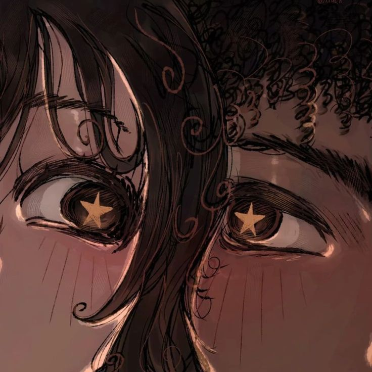

𓆉 ⋆｡˚𓇼 ⋆｡˚𓆟

Menú del día:
⠀⠀⠀⠀⠀⠀⠀⠀⠀⠀⠀⠀⠀⠀⢀⠀⠀⣀⣄⣀⠄⠀⠀⠀⠀ ⠀⠀⠀⠀⠀⠀⠀⠀⠀⠀⠀⠀⠀⠀⠀⠀⠀⠀⠀⠀⠀⠀⠀⠀⠀⠀⠀⠀⣀⣴⣿⠏⢁⣴⣿⣿⣿⠃⣰⡇⠀⠀⠀ ⠀⠀⠀⠀⠀⠀⠀⠀⠀⠀⠀⠀⠀⠀⠀⠀⠀⠀⠀⠀⠀⣠⠄⣆⠀⠀⢀⣼⣿⣿⡟⠀⣾⣿⣿⣿⡏⢰⣿⡇⠀⠀⠀ ⠀⠀⠀⠀⠀⠀⠀⠀⠀⠀⠀⠀⠀⠀⠀⠀⠀⠀⠀⢀⣾⣿⠀⣹⡆⠀⢸⣿⣿⣿⡇⢰⣿⣿⣿⣿⡇⣾⣿⣇⠀⠀⠀ ⠀⠀⠀⠀⠀⠀⠀⠀⠀⠀⠀⠀⠀⢀⣀⣤⣤⣶⣾⣿⣿⡿⠀⣿⣿⠀⣿⣿⣿⣿⡇⢸⣿⣿⣿⣿⠀⣿⡿⣿⣆⠀⠀ ⠀⠀⠀⠀⠀⠀⠀⠀⢀⣠⣴⣶⣿⣿⣿⣿⣿⣿⣿⣿⣿⠇⣼⣿⡿⢰⣿⣿⣿⣿⡇⢸⣿⣿⣿⡿⢸⡟⠀⢸⣿⡆⠀ ⠀⠀⠀⠀⠀⠀⢠⣴⣿⣿⣿⣿⣿⣿⣿⣿⣿⣿⣿⡿⣣⣾⣿⣿⠇⣼⣿⣿⣿⣿⠀⣼⣿⣿⣿⡇⢘⠃⠀⠀⣿⣷⠀ ⠀⠀⠀⠀⠀⣰⣿⣿⣿⣿⣿⣿⣿⣿⣿⣿⣿⣿⣯⣾⣿⣿⣿⡟⣸⣿⣿⣿⣿⡟⢀⣿⣿⣿⣿⠃⠀⠀⠀⠀⣿⣿⠄ ⠀⠀⠀⠀⢰⣿⣿⣿⣿⣿⣿⣿⣿⣿⣿⣿⣿⣿⣿⣿⣿⣿⢟⣼⣿⣿⣿⣿⣿⠁⣼⣿⣿⣿⡿⠀⠀⠀⠀⢸⣿⣿⠀ ⠀⠀⠀⠀⣿⣿⣿⣿⣿⣿⣿⣿⣿⣿⣿⣿⣿⣿⣿⣿⣿⣯⣿⣿⣿⣿⣿⣿⠃⣼⣿⣿⣿⣿⠇⠀⠀⠀⢀⣿⣿⡟⠀ ⠀⠀⠀⢀⣿⣿⣿⣿⣿⣿⣿⣿⣿⣿⣿⣿⣿⣿⣿⣿⣿⣿⣿⣿⣿⣿⡿⢡⣾⣿⣿⣿⣿⡟⠀⠀⠀⢀⣾⣿⣿⠃⠀ ⠀⠀⠀⠀⣿⣿⣿⣿⣿⣿⠿⠛⠛⠛⠿⣿⣿⣿⣿⣿⣿⣿⣿⣿⣿⣯⣶⣿⣿⣿⣿⣿⠟⠀⠀⠀⣠⣿⣿⣿⠏⠀⠀ ⠀⠀⠀⠀⣿⣿⣿⠿⠋⠀⠀⠀⠀⠀⣰⣿⣿⣿⣿⣿⣿⣿⣿⣿⣿⣿⣿⣿⣿⣿⡿⠃⠀⢀⣴⣾⣿⣿⣿⠋⠀⠀⠀ ⠀⠀⠀⠀⠸⡿⠋⠀⠀⠀⠀⠀⠀⠀⣿⣿⣿⣿⣿⣿⣿⣿⣿⣿⣿⣿⣿⣿⡿⣋⣠⣴⣾⣿⣿⣿⣿⠟⠁⠀⠀⠀⠀ ⠀⠀⠀⠀⠀⠉⠀⠀⠀⠀⠀⠀⠀⠀⢻⣿⣿⣿⣿⣿⣿⣿⣿⣿⣿⣿⣿⣿⣿⣿⣿⣿⣿⣿⡿⠟⠁⠀⠀⠀⠀⠀⠀ ⠀⠀⠀⠀⠀⠀⠀⠀⠀⠀⠀⠀⠀⠀⠀⠙⠿⣿⣿⣿⣿⣿⣿⣿⣿⣿⣿⣿⣿⣿⣿⡿⠟⠉⠀⠀⠀⠀⠀⠀⠀⠀⠀ ⠀⠀⠀⠀⠀⠀⠀⠀⠀⠀⠀⠀⠀⠀⠀⠀⠀⠀⠈⠉⣝⣿⣿⣿⣿⣿⣿⣿⠿⠋⠁⠀⠀⠀⠀⠀⠀⠀⠀⠀⠀⠀⠀ ⠀⠀⠀⠀⠀⠀⠀⠀⠀⠀⠀⠀⠀⠀⠀⠀⠀⣀⣴⣾⣿⣿⣿⣿⡿⠟⠉⠀⠀⠀⠀⠀⠀⠀⠀⠀⠀⠀⠀⠀⠀⠀⠀ ⠀⠀⠀⠀⠀⠀⢀⡇⠀⠀⠀⠀⠀⠀⠀⣰⣾⣿⣿⣿⣿⡿⠏⠁⠀⠀⠀⠀⠀⠀⠀⠀⠀⠀⠀⠀⠀⠀⠀⠀⠀⠀⠀ ⠀⠀⠀⠀⠀⢠⣿⡇⠀⠀⠀⠀⣠⣴⣿⣿⣿⣿⠿⠛⠉⠀⠀⠀⠀⠀⠀⠀⠀⠀⠀⠀⠀⠀⠀⠀⠀⠀⠀⠀⠀⠀⠀ ⠀⠀⠀⠀⣰⣿⣿⡇⠀⣠⣴⣿⣿⣿⠿⠛⠉⠀⠀⠀⠀⠀⠀⠀⠀⠀⠀⠀⠀⠀⠀⠀⠀⠀⠀⠀⠀⠀⠀⠀⠀⠀⠀ ⠀⠀⠀⣰⣿⣿⣿⣷⣾⣿⡿⠟⠋⠀⠀⠀⠀⠀⠀⠀⠀⠀⠀⠀⠀⠀⠀⠀⠀⠀⠀⠀⠀⠀⠀⠀⠀⠀⠀⠀⠀⠀⠀ ⠀⠀⣼⣿⣿⣿⣿⠿⠋⠁⠀⠀⠀⠀⠀⠀⠀⠀⠀⠀⠀⠀⠀⠀⠀⠀⠀⠀⠀⠀⠀⠀⠀⠀⠀⠀⠀⠀⠀⠀⠀⠀⠀ ⠀⣼⣿⠿⠛⠉⠀⠀⠀⠀⠀⠀⠀⠀⠀⠀⠀⠀⠀⠀⠀⠀⠀⠀⠀⠀⠀⠀⠀⠀⠀⠀⠀⠀⠀⠀⠀⠀⠀⠀⠀⠀⠀ ⠜⠋⠁⠀⠀⠀⠀⠀⠀⠀⠀⠀⠀⠀⠀⠀⠀⠀⠀⠀⠀⠀⠀⠀⠀⠀⠀⠀⠀⠀⠀⠀⠀⠀⠀⠀⠀⠀⠀⠀⠀⠀⠀
"¡Comer es vivir!" - Senshi
ദ്ദി(˵ •̀ ᴗ - ˵ ) ✧ ⋅˚₊‧ ଳ ‧₊˚ ⋅
Me gusta mi jeva Sergio jeje.

mi jevo y yo
‧₊˚♪ 𝄞₊˚⊹ Playlist